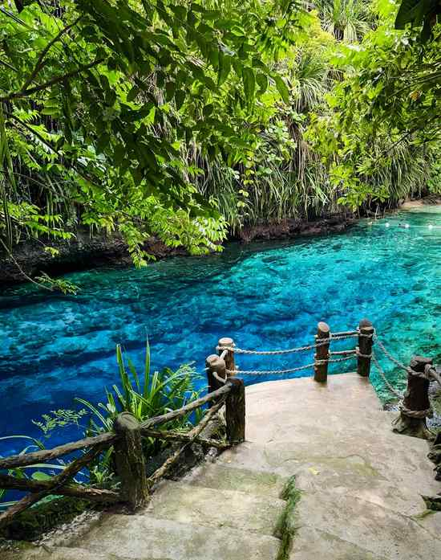

Surigao del Sur has two headline attractions that look nothing alike: a scatter of white sandbars off Barangay Britania in San Agustin, and a short, startlingly blue river in Hinatuan that most visitors are allowed to look at but not swim in. Both sit on the same coastal highway, so they pair easily for anyone willing to spend a few days on the Caraga coast.
The catch is distance. From Cebu the trip is a flight to Butuan followed by hours on the road, and the two stops lie on opposite sides of a highway junction, which makes the order you visit them in matter. Below: the route, fees, rules, tides, weather and a plan you can adjust to your dates.
Fees and swimming rules at both places have been revised over the years, and posted prices differ from one report to the next. Treat the figures below as planning numbers; the tourism desk or the gate has the final word on the day.

Getting There From Cebu
Fly Cebu to Butuan. Cebgo and Philippine Airlines both list nonstop flights that take a little over an hour, with several departures a day, though schedules shift, so check the airline apps before you commit to dates. The old direct Cebu to Tandag flight was dropped in 2018, so any older guide that suggests it is out of date.
From Bancasi Airport there are two common ways to reach Britania. The cheaper one is a multicab to the Langihan terminal area (around PHP 50), a bus to Barobo (roughly PHP 250 to PHP 300 and three to four hours), then a bus or van toward Tandag, getting off at Salvacion Crossing (PHP 100 to PHP 150, under an hour). The simpler one is a van from the airport straight to Tandag (roughly PHP 400 to PHP 450), asking to be dropped at Salvacion. Fares creep upward, so treat those as a floor.
Barobo is the hinge of the whole trip. Britania lies up the coast from it toward Tandag, and Hinatuan lies down the coast toward Bislig. Public transport between the two sites usually means a transfer at Barobo, not a single ride, so leave slack in the day. A loop of Butuan, Britania, Hinatuan and back to Butuan visits each side once without repeating a leg.
Britania Islands: How the Boat Tour Works
Salvacion Crossing is where you register and pay the environmental fee at the tourism center, and a motorcycle or tricycle takes you from there to the shore at Britania. Budget about PHP 50 to PHP 100 per person for the registration and environmental charges combined, and keep the receipts. Island hopping runs roughly from 6 AM to 4 PM, and nobody stays overnight on the islets themselves.
A boat for up to about 15 people costs PHP 1,500 to PHP 1,800, with roughly PHP 100 to PHP 120 for each extra head; larger boats carry up to about 25. The standard tour covers four stops. Hagonoy is about 20 minutes by boat from the mainland. Boslon has a sandbar that connects it to the Panlangagan islets, which you can walk to at low tide. Hiyor-Hiyoran is around five minutes beyond Boslon. Naked Island is a tear-shaped sandbar with no trees, and tides or waves sometimes cover it or make landing impossible.
The tide decides how much sand you get. More islets show at low tide, and the walk out to the Panlangagan islets is only safe while the water is down, so watch the level and be back on Boslon before it rises. Bring water shoes, because sea urchins cling to the rocks. Nothing on the islets has electricity or a toilet, so use the facilities on the mainland, carry your own food and water, and expect vendors to sell sea urchin (tuyom) for around PHP 100 a plate. Boslon is the busiest stop on weekends, and a strong current can make a boatman skip a stop, so follow his call.
Hinatuan Enchanted River: Look, Don't Dive In
The river sits along the boundary of Barangays Talisay and Cambatong, about 14 km from Hinatuan town proper, and a habal-habal from the town terminal costs around PHP 50 to PHP 80 one way. It opens daily at 8 AM and closes at 5 PM. Entry is a small per-person fee, last reported between PHP 30 and PHP 50. Life vests are compulsory for swimmers and are either bundled into the ticket or rented for roughly PHP 15 to PHP 50 an hour, and picnic tables start around PHP 100.
The rules matter more than the prices. Arrivals jumped from 207,019 in 2015 to 321,192 in 2016, water quality tests began failing, and the local government closed the site in early 2017 and reopened it on 5 March 2017 under new rules. The main lagoon is now for viewing only. Swimming is limited to a designated stretch downstream with a life vest, after a short safety briefing, food and trash stay away from the banks, and cave diving is allowed only for research. If an older blog tells you to dive into the blue pool, it describes a version of the place that no longer exists.
The daily fish feeding now takes place around 3 PM, announced by the Hymn of Hinatuan; it used to be at noon, so ask at the gate. Go early, preferably on a weekday, because the viewing area gets crowded quickly. Tinuy-an Falls in Bislig is the usual add-on if you have a spare day, and its fees are separate.
What the Trip Costs on the Ground
Costs split cleanly into shared and individual. If six people share a PHP 1,800 boat, that is PHP 300 each. A standard room at a Britania resort listed at PHP 1,500 for four people works out to PHP 375 each. Add the road legs, the small fees, the habal-habal to the river and meals, and a rough estimate for two to three days is PHP 3,000 to PHP 4,000 per person, flights excluded. It assumes a shared boat and room, the fares above and about PHP 250 a day on food.
When to Go
There is no clean answer. The province has no true dry season; rain is heaviest from about November to March, peaking in January, and the lightest stretch falls around July to October. December to May is often called the best window, but that overlaps the northeast monsoon rains, so it is a trade-off, not a promise. Pick your dates, then check the forecast a few days out. Boats can be halted when seas are rough even on bright mornings, and our guide to island-hopping safety explains how those halts work and what to carry.
A Three-Day Plan That Does Not Rush
Day one is travel: an early flight to Butuan, the road to Salvacion in the afternoon, and a night at a Britania resort. Day two starts with a boat at 6 AM, finishes the islands by late morning and uses the afternoon to reach Hinatuan or Bislig. Day three is the Enchanted River early, then the road back to Butuan. A two-day version works only if you leave Butuan before dawn and accept tight timing at the river.
If Siargao is also on your list, our guide to Siargao from Cebu covers that route, and Sohoton Cove, reachable from Surigao City or Siargao, is the other big Caraga day trip.
Is the Long Road Worth It?
It is a slow trip with basic boats and a lot of cash handling, and the best parts depend on tide and weather you cannot control. In return the sandbars are quiet on weekdays, the river is unlike anything in the Visayas, and the logistics from Cebu are simpler than the map suggests. Go with a flexible schedule, small bills and the expectation that the river is for looking at.